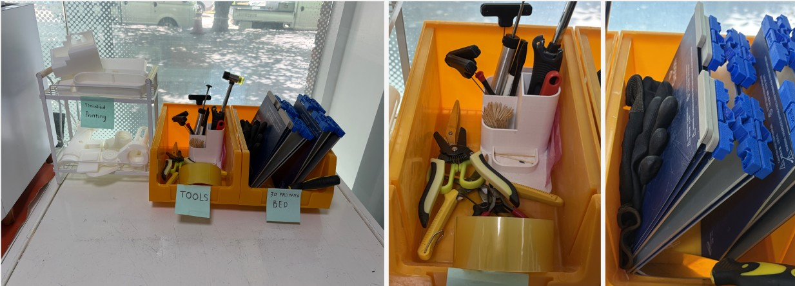
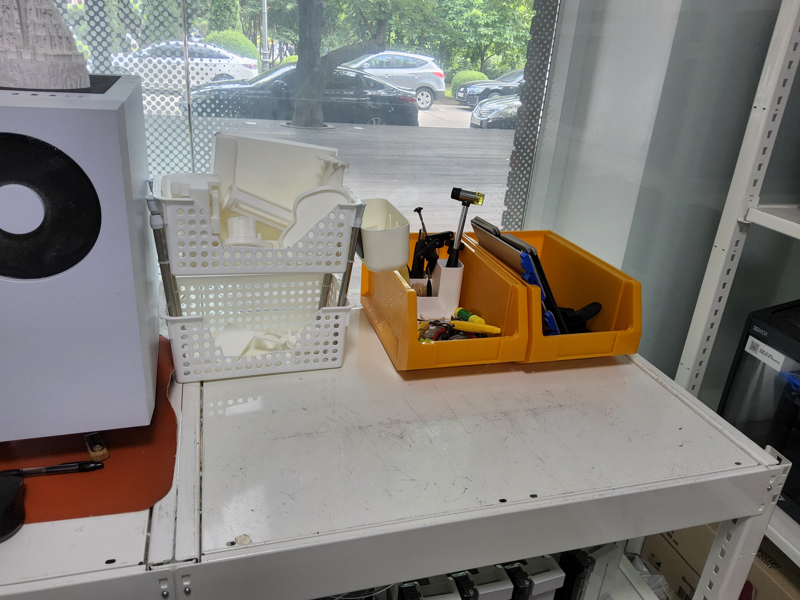
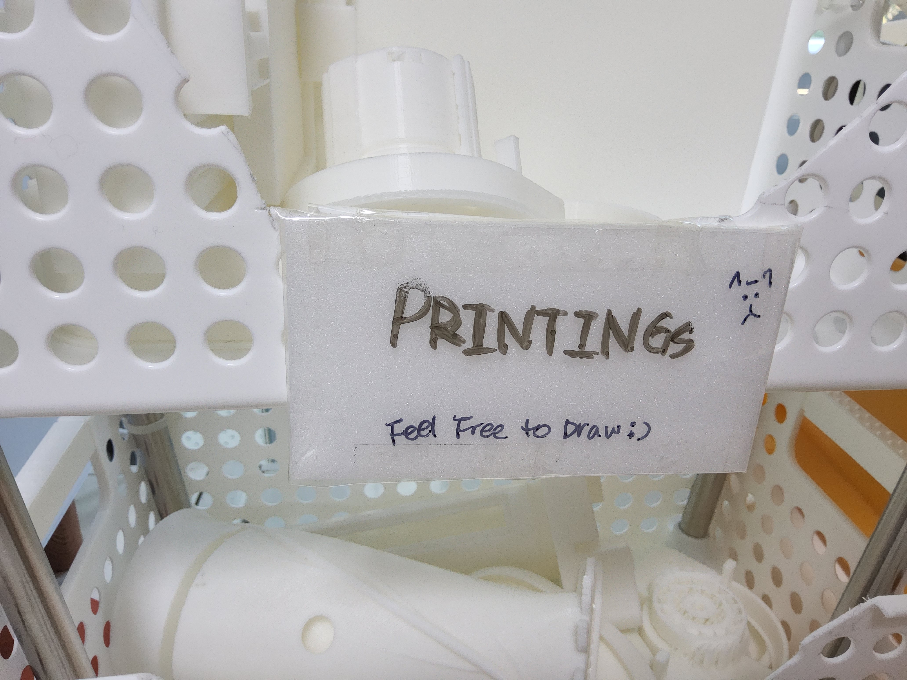

The 3D printing room already had boxes. The room also had a clear protocol:
clean printer beds, tools for removing prints, and finished prints temporarily
left by other users. However, this protocol was not clearly visible.
CLEAN BEDS
Clean printer beds used before starting a new print.
TOOLS
Scrapers, hammers, and tools for removing prints from the bed.
FINISHED PRINTS
Temporary storage for prints that have been removed by someone else.
Before
Containers Without Protocol
Before the intervention, people placed objects wherever there was space.
Tools, printer beds, support pieces, and finished prints shared the same visual field.
The problem was not the lack of storage. The problem was that the boxes did not
clearly communicate what action should happen there.
Before
The containers existed, but their roles were not visible enough.

Prototype
Temporary name tags began to make the system readable.
Prototype
A Name Is Not Yet a Rule
For the prototype, I added simple name tags such as Tools, Bed, and Printings.
It partially worked. People placed fewer random objects in the tool box, and the
space became easier to read. However, the prototype also showed that a label should
do more than name a box. It should guide behavior.

Without Tags
The space looked cleaner, but the rule was still ambiguous.
With Tags
The boxes began to tell users what belongs there.
Final Intervention
Protocol Labels
After the critique, I revised the intervention from simple name tags into protocol labels.
The categories remain fixed: clean beds, tools, and finished prints. The labels make these
fixed rules visible. For the finished prints box, I added a writable area so users can leave
temporary information such as names, dates, or notes.

Tap to Read the Protocol
What Should Happen Here?
In the room, visitors see boxes and labels. On this webpage, they can read the hidden
action behind each label.
Take one before printing. Return only clean printer beds here.
Use these tools to remove prints from the bed. Return them here after use.
Do not put support waste here.
Temporary storage for other users’ finished prints. Leave a name, date,
or note if needed.
What the Webpage Adds
A Second Layer of Reading
The webpage adds a second layer of reading to the site. In the room, visitors see boxes
and labels. On the webpage, they can understand the hidden protocol behind those labels.
The page shows that the project is not simply about organizing objects, but about making
an existing rule readable.
I did not change the use of the boxes. I made their existing use visible.